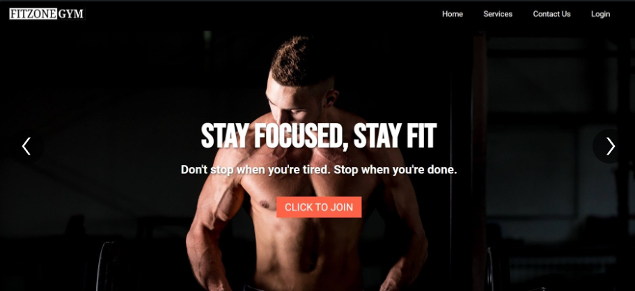
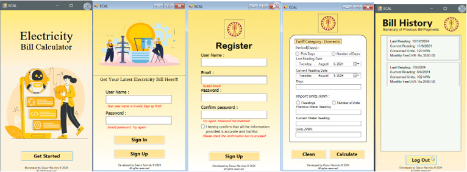

A web application designed to manage a gym center, handling user registrations, logins, and package subscriptions, with feedback functionality included.
Technologies Used: HTML, CSS, JavaScript
A C# application developed using Windows Forms (.NET Framework) for calculating electricity bills. Features user registration, login, and the ability to save previous records.
Technologies Used: C#, Windows Forms
I am the President of the Statistics and Computer Science Student Association, University of Kelaniya. where I lead various initiatives and activities to enhance our academic community.
Some common achievements and awards during this phase include: